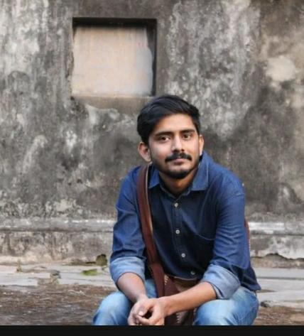

Current Position
Assistant Professor (October 2025 – Present)
Institute for Public Administration and Professional Development, Presidency University (3rd Campus)
Previous: Post Doctoral Researcher (August 2024 – September 2025), Moturi Satyanarayana Centre for Advanced Studies in the Humanities and Social Sciences, KREA University
Prior: Assistant Professor (Ad-Hoc), Economics (January 2023 – July 2024), Dr B R Ambedkar School of Economics University, Bengaluru
Academic Records and Qualifications
| Degree / Year | Institution | Board / University | Grade / Awarded |
|---|---|---|---|
| PhD in Development Studies [2016–2022] | Thesis at: Tata Institute for Social Sciences, Mumbai JRF & SRF at: Indian Statistical Institute, Bangalore Centre |
TISS Mumbai | Awarded in March 2023 |
| MA Economics, 2014–2016 | School of Economics | University of Hyderabad | 8.25 CGPA |
| B.Sc. Economics, 2011–2014 | Ramakrishna Mission Vidyamandira (Autonomous) | University of Calcutta | First Class [63%] |
| Higher Secondary | Ballygunge Govt High School | WBCHSE | First Division [78.3%] |
Professional Experience (Teaching)
| Year / Semester | Courses Taught | Full Time / Visiting | Place / Institution |
|---|---|---|---|
| 2024 (March–June) | Economic Development in India (Select Modules) Masters in Public Policy |
Visiting Faculty (Guest) | National Law School India University, Bengaluru |
| 2024 (January–July) | Advanced Econometrics (UG II) Game Theory (PG-I) |
Full Time | Dr B R Ambedkar School of Economics University, Bengaluru |
| 2023 Calendar Year | Development Economics (PG Elective for MSc General Economics) Econometrics I (UG 2nd Year) Statistics for Economics I (UG 1st Year) |
Full Time | Dr B R Ambedkar School of Economics University, Bengaluru |
| 2023 | Advanced Statistics for Economics (UG-I) Advanced Macroeconomics (PG-I Year) Experimental and Behavioral Methods of Development Economics (UG III Year) Advanced Quantitative Techniques in Economics (PG-I, parallel semester) |
Full Time | Dr B R Ambedkar School of Economics University, Bengaluru |
| 2022 (July–December) | Applied Microeconomics [UG II] Industrial Organization [UG III] |
Visiting Faculty | Dr B R Ambedkar School of Economics University, Bengaluru |
Post-Graduate Dissertations Supervision at Previous Institution
| Year | Title of Thesis / Dissertation | Candidate Name | Status |
|---|---|---|---|
| 2024 | Gender Inequality: The Vicious Cycle of Choices, Opportunities, and Outcomes in Indian Context | Ms. Nency Agrawal, BASE-B University | Passed |
| 2024 | The Murky Side of Menstruation: The Interconnected Dynamics of Menarche, Education, Employment, and Early marriage | Ms. Samhitha Narayan, BASE-B University | Passed |
| 2024 | GENDER GAP IN EDUCATION AND TRANSITION TO SALARIED WORK: AN EMPIRICAL STUDY ON INDIA | Ms. Nidhi C., BASE-B University | Passed |
| 2024 | Poverty, Regional Disparity, and Caste in Karnataka: A Case Study | Ms. P M Keerthana, BASE-B University | Passed |
| 2023 | Impact of access to technical information on productivity and profitability of selected Crops in the Indian context | Mr. Amshu D | Passed |
| 2023 | Investigating the Impact of Access to Credit and the Source of Credit on the profitability and productivity in Indian Agriculture | Mr. Subhankar Dubey | Passed |
Selected Research Publications
Biswas, D., & Bhattacharya, S (2026). “Is Tertiarisation the Way Forward?: Growth and Employment in West Bengal”. Economic and Political Weekly. Vol 61 (Issue 3). https://doi.org/10.71279/epw.v61i3.43100
Dhar, D., Thuppilikkat, A. A., & Bhattacharya, S. (2025). Transversal Unionism: Resisting and Navigating a Neoliberal City Through Identity and Labour Power. In Migrant Labour in the Gig Economy: The Intersection of Migrant Labor, Platform Capitalism, and Resistance (pp. 231-261). Cham: Springer Nature Switzerland.
Dhar, D., & Bhattacharya, S. (2025). Racialized labour, intimate subsidies, and silent cost of social reproduction: the saga of migrant women in India's gig economy. Globalizations, 1-26.
Bhattacharya., Soham and Saha., Torsa (2025), “Making of a Rape-Murder-Atrocity and the Failed State of West Bengal”. Economic and Political Weekly. July 12, 2025.
Mahmood, Z., & Bhattacharya, S. (2025). The Roots of a Populist Regime: Examining the Trinamool Congress in West Bengal. Studies in Indian Politics, 13(1), 23-40. https://doi.org/10.1177/23210230251324758
Bhattacharya, Soham (2024), “An Exploration into Poverty and Vulnerability in India: A Response”. Economic and Political Weekly.
Nency Agrawal., Samhitha N, Bhattacharya, Soham (2024), “New Working Poor: Features of Increased Female Workers in Contemporary India”. Economic and Political Weekly. 2024.
Bhattacharya, Soham and Dasgupta, Indraneel (2023), “Economics and Politics of Some Emerging Fault Lines in Rural West Bengal”. Economic and Political Weekly. Vol 58, Issue 16, April 2023.
Bhattacharya, Soham (2022), “Is Extreme Poverty Declining? Findings from Agricultural Households in India”, Economic and Political Weekly. Vol. 57, Issue No. 49.
Modak, Tapas Singh, and Bhattacharya, Soham (2021), "The Covid-19 Pandemic and Agriculture in Rural India: Observations from Indian Villages," Review of Agrarian Studies, vol. 11, no. 1, available at http://ras.org.in/718c8ab7a88f7d4194c8958701507f63
Bakshi Aparajita and Bhattacharya, Soham (2021), “A Step to further Private and Corporate Interests in Agricultural Land in Karnataka”, Policy Brief Published online. Foundation for Agrarian Studies
Bhattacharya, Soham (2019), “Agricultural Tenancy in Contemporary Punjab: A Study based on National Sample Survey Data”, at Review of Agrarian Studies, Volume 9, No. 2. 2019. Available at: http://ras.org.in/36ba16ae740b23733315c19e4383a785
Bora, Kaushik, Bhattacharya, Soham, and Niyati, S (2018), “Paddy Prices and Marketing Agencies in India: An Empirical Analysis of Public Procurement in India” Agricultural Economics Research Review, Vol (31). Conference Number. 2018. https://dx.doi.org/10.5958/0974-0279.2018.00031.9
Non-Teaching Academic / Professional Expertise
Journal Referee / External Reviewer at: Oxford Development Studies; Economic and Political Weekly, Review of Agrarian Studies, Institute for Social and Economic Change.
Professional & Academic Referees
1. Prof N R Bhanumurthy
Director, Madras School of Economics. (Former Vice Chancellor and Professor, Dr. B R Ambedkar School of Economics University, Bengaluru.)
Email: nrbmurthy@mse.ac.in
Director, Madras School of Economics. (Former Vice Chancellor and Professor, Dr. B R Ambedkar School of Economics University, Bengaluru.)
Email: nrbmurthy@mse.ac.in
2. Prof Madhura Swaminathan
Head and Professor at the Economic Analysis Unit, Indian Statistical Institute, Bangalore Centre.
Email: madhura@isibang.ac.in
Head and Professor at the Economic Analysis Unit, Indian Statistical Institute, Bangalore Centre.
Email: madhura@isibang.ac.in
3. Prof V K Ramachandran
Retired Professor at the Economic Analysis Unit, Indian Statistical Institute, Bangalore Centre.
Email: gokilapuram@gmail.com
Retired Professor at the Economic Analysis Unit, Indian Statistical Institute, Bangalore Centre.
Email: gokilapuram@gmail.com
4. Prof Indraneel Dasgupta
Professor at the Economic Research Unit, Indian Statistical Institute, Kolkata Centre.
Email: indraneeel@isical.ac.in
Professor at the Economic Research Unit, Indian Statistical Institute, Kolkata Centre.
Email: indraneeel@isical.ac.in